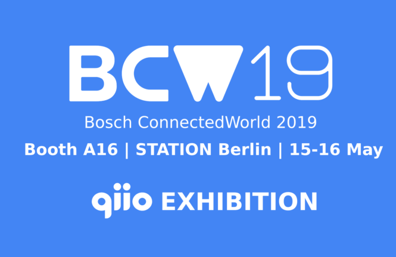

Experience IoT solutions first-hand! Discover use cases and best practices
in Bosch ConnectedWorld 2019!
qiio will showcase a solution for logistics optimization and sales prediction. Visit qiio at booth A16,
STATION Berlin from 15th to 16th May!
Feel free to come by to see how your business can benefit from an end-to-end and secure IoT solution.